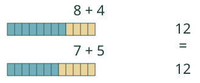
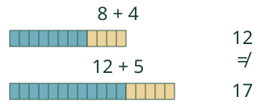

Aavan kaksi kokoelmaa.
Muuta osaa. Milloin puolet ovat yhtä suuret?
Vertaa: 8 + 4 ja 7 + 5 ovat kumpikin 12. Jos jälkimmäinen 7 kasvaa yhdeksään, puolet eivät enää ole yhtä suuret. JavaScriptillä voit muuttaa mallia; ilman sitä tutki alla olevia kuvia.
Laske kummankin puolen koko arvo ja täydennä puuttuva osa.
= tarkoittaa samaa arvoa. Puolet voivat näyttää erilaisilta. Merkki ei käske kirjoittamaan vastausta vain oikealle.
Laatikko on osa puolta

Lauseessa 8 + 4 = □ + 5 laatikkoon sopii 7. Jos kirjoitat koko vasemman puolen arvon 12, oikealla onkin 12 + 5 eli 17.

Lasku saa olla kummalla puolella vain
5 = 4 + 1 on tosi, ja myös 4 + 1 = 5 on tosi. Samoin 6 = 6. Yhtäsuuruus ei tarvitse laskutoimitusta kummallekaan puolelle.
Mieti: ovatko 3 + 1 ja 2 + 4 yhtä suuret?
Katso perustelu
Eivät. Arvot ovat 4 ja 6. Ne pitää erottaa merkillä ≠. Sama yksittäinen numero molemmissa laskuissa ei riitä.
Uusi tilanne: sama kokonaishinta
36 € ja 27 € maksavat yhteensä saman kuin 40 € ja 23 €. Ensimmäinen osa kasvoi neljä, joten toinen pieneni neljä. 36 + 27 = 40 + 23. Kummassakin summa on 63 €.
Tutki lisää
Kirjoita kolme erilaista puolta, joiden arvo on 9. Voit käyttää esimerkiksi 9, 4 + 5 ja 10 − 1. Aseta = vain yhtä suurten arvojen väliin. Milloin osan muuttaminen ei muuta koko arvoa?
Lopuksi: mikä sopii laatikkoon: 9 = □ + 2? Miten tarkistat?
Opettajalle ja ilman ruutua
Luokat 3–6. Vaadittu esitieto on M-ARITH-01. Mallin yhdellä ruutuvälillä on aina sama lukuarvo; palkkien pituudet eivät ole mitattuja massoja. Sama numero voi esiintyä usean vastauksen kohdalla. Nimeämistä, puhetta, pisteiden naputtelua tai vaiheiden läpikäyntiä ei vaadita vastaukseen.
Rakenna yhtä pitkistä yksikköpaloista kaksi eri hajotelmaa. Vaihda kokoelmien paikkaa. Lisää pala vain toiselle ja päätelkää, pitääkö = edelleen paikkansa. Kysy erikseen perustelua, jos haluat tietää oppijan ajattelutavan.
Mallin määrät ovat 8 + 4 ja k + 5, k on 0–16. Harjoitus käyttää kokonaislukuja ja yhtäsuuruuksia, ei kirjainyhtälöiden ratkaisumenetelmää. Malli ja vastaukset ovat erilliset. Oikea paikallinen vastaus ei osoita itsenäistä perustelua, viivästettyä muistamista tai formaalia hallintaa. Ei oppilastallennusta, aikarajaa tai vaikuttavuusväitettä.